NCERT Solutions For Class 10 Science Chapter 7 Control And Coordination: In this article, you will find out everything about NCERT Solutions For Class 10 Science Chapter 7 Control And Coordination. Candidates can find everything about control and coordination class 10 extra questions with answers in this article.
The answer to each and every question in class 10 science chapter 7 notes is provided along with complete, step-wise solutions for candidates better understanding. This will further help candidates in their home assignments and as well as practice sessions. Read on to find everything about Control and Coordination Class 10.
Free download NCERT Solutions for Class 10 Science Chapter 7 Control and Coordination PDF in Hindi Medium as well as in English Medium for CBSE, Uttarakhand, Bihar, MP Board, Gujarat Board, and UP Board students, who are using NCERT Books based on updated CBSE Syllabus for the session 2019-20.
NCERT Solutions for Class 10 Science Chapter 7 Control and Coordination
Before getting into the details of NCERT Solutions For Class 10 Science Chapter 7 Control And Coordination, let’s have an overview of topics and subtopics under control and coordination class 10 NCERT questions:
- Control And Coordination
- Animals – Nervous System
- Coordination In Plants
- Hormones In Animals
Control and Coordination Class 10
- Control and Coordination Class 10 Mind Map
- Control and Coordination Class 10 Intext Questions
- Control and Coordination Class 10 MCQ
- Control and Coordination Class 10 Chapter End Questions
- नियंत्रण एवं समन्वय के एनसीईआरटी उत्तर
- Control and Coordination Notes
- Control and Coordination NCERT Exemplar
- Control and Coordination Important Questions
- Control and Coordination HOTS
- Control and Coordination Value Based Questions
NCERT Solutions for Class 10 Science Chapter 7 Intext Questions
- Control and Coordination Class 10 Page No 119
- Control and Coordination Class 10 Page No 122
- Control and Coordination Class 10 Page No 125
Question 1
What is the difference between a reflex action and walking?
Answer:
| Reflex action | Walking |
| 1. It is the action which is performed automatically. | 1. It is a response to the information transmitted by nerve to muscles of the legs. In this case, thinking is involved. |
| 2. It is controlled and coordinated by spinal cord. | 2. Brain instructs and controls leg muscles to move. |
| 3. It is an involuntary action. | 3. It is a voluntary action. |
Question 2
What happens at the synapse between two neurons?
Answer:
The small empty space between two nerve cells is called synapse. At synapse, a chemical substance is produced at the end of axon of one nerve cell that reaches to the other nerve cell through the dendrite. Thus, information is transmitted from one nerve cell to other nerve cell by synapse.
Question 3
Which part of the brain maintains posture and equilibrium of the body ?
Answer:
Posture and equilibrium of the body are controlled by cerebellum.
Question 4
How do we detect the smell of an agarbatti (incense stick) ?
Answer:
The smell of agarbatti (incense stick) diffuses in the air. It is detected by olfactory receptors present in the nose. This information is sent to olfactory lobe by sensory nerves located in the forebrain. It responds to the information.
Question 5
What is the role of the brain in reflex action ?
Answer:
There is no role of brain in reflex action. These involuntary actions are controlled by the spinal cord which take place immediately without thinking of how to respond to the stimuli.
Question 1
What are plant hormones ?
Answer:
Plant hormones are also called phytohormones. Plant hormones are the chemical substances which help in controlling growth, flowering, height, development of plants and their response to the environment.
Different types of phytohormones are – auxins, gibberllins, cytokinins, abscisic acid and ethylene.
Question 2
How is the movement of leaves of the sensitive plant different from the movement of a shoot towards light ?
Answer:
| Movement of leaves of sensitive plant | Movement of a shoot towards light |
| 1. It is a nastic movement which does not depend on the direction of stimulus applied. | 1. It is a tropic movement which depends on the direction of stimulus applied. |
| 2. The stimulus is touch. | 2. The stimulus is light. |
| 3. It is caused by the sudden loss of water from the swellings at the base of leaves. | 3. It is caused by the unequal growth on the two sides of the shoot. |
| 4. It is not a growth movement. | 4. It is a growth movement. |
Question 3
Give an example of a plant hormone that promotes growth.
Answer:
Auxin.
Question 4
How do auxins promote the growth of a tendril around a support ?
Answer:
When the tip of a tendril touches a support, then the auxins present in its tip move to that side of tip which is away from the support. Auxins promote growth. So, due to more auxins in it, the side of tendril away from the support grows faster (and becomes longer) than the side which is in contact with the support and makes the tendril twirl (or bend) around the support.
Question 5
Design an experiment to demonstrate hydrotropism.
Answer:
Take two glass troughs A and B and fill each one of them two-thirds with soil. In trough A plant a tiny seedling. In trough B plant a similar seedling and place a c/ay pot inside the soil. Water the soil in trough A daily and uniformly. Do not water the soil in trough B but put some water in the clay pot. Leave both the troughs for a few days.

Now, dig up the seedlings carefully from both the troughs without damaging their roots. We will find that the root of seedling in trough A is straight. On the other hand, the root of seedling in trough B is found to be bent to the right side i.e., towards the clay pot containing water.
In trough A, the root of the seedling gets water from both sides. But in trough B, the roots get water oozing out from the clay pot which is kept on the right side. Therefore, the root of seedling in trough B grows and bends towards the source of water to the right side. This experiment shows that the root of a plant grows towards water. In other words, the root of a plant is hydrotropism.
Question 1
How does chemical coordination take place in animals ?
Answer:
Chemical coordination in animals takes place through the hormones secreted by the endocrine glands. Coordination in animals takes place through hormone system as well as nervous system which is called endocrine system. Endocrine glands secrete animal hormones directly into the blood that reach to the specific cells. Special type of molecules are present on the surface of cells to detect these hormones. These cells act according to the information that a particular hormone carries.
Question 2
Why is the use of iodised salt advisable ?
Answer:
It is advised to use iodised salt because thyroid gland needs iodine to produce thyroxin hormone. Thyroxin hormone controls all the metabolic activities of our body like metabolism of carbohydrates, fats and protein etc. Due to the deficiency of thyroxin a disease called goitre is caused.
Question 3
How does our body respond when adrenaline is secreted into the blood ?
Answer:
The heart beat increases when adrenaline is secreted into the blood so that more oxygen is supplied to our muscles. The blood supply to the digestive system and skin decreases because the small arteries around the muscles of these organs contract. This turns the direction of blood towards our skeletal muscles. The breathing rate also increases due to the contractions of the diaphragm and rib muscles. All these responses enable us to face the situations of fear and anger.
Question 4
Why are some patients of diabetes treated by giving injections of insulin ?
Answer:
Insulin hormone regulates blood sugar levels. If this is not secreted in proper amounts, the sugar level in the blood rises. This causes many harmful effects.
To treat harmful effects of increased level of blood sugar, the diabetic patients are treated by giving injections of insulin.
NCERT Solutions for Class 10 Science Chapter 7 Textbook Chapter End Questions
Question 1
Which of the following is a plant hormone?
(a) Insulin
(b) Thyroxin
(c) Oestrogen
(d) Cytokinin
Answer:
(d) Cytokinin
Question 2
The gap between two neurons is called a
(a) dendrite
(b) synapse
(c) axon
(d) impulse
Answer:
(b) Synapse
Question 3
The brain is responsible for
(a) thinking
(b) regulating the heart beat
(c) balancing the body
(d) all of the above
Answer:
(b) All of the above
Question 4
What is the function of receptors in our body ? Think of situations where receptors do not work properly. What problems are likely to arise ? [AICBSE 2016]
Answer:
Receptors are specialised cells located in our sense organs like ear, nose, skin, tongue and eyes. The function of receptors is to detect information from the environment. For example, olfactory receptors detect smell. If receptors do not work properly, the information obtained from the environment will be delayed to reach the spinal cord or brain. In this situation, the response to the environmental stimulus will be delayed causing harm to the body. For example, if skin receptors are damaged, and one accidentally touches a hot object, then his/her hands might get burn as the damaged receptor cannot perceive the external stimuli of heat and pain.
Question 5
Draw the structure of a neuron and explain its function. [AICBSE 2017]
Answer:
Nerve cell or neuron is the functional unit of nervous system. A nerve cell has three parts-
(i) cell body
(ii) dendrite
(iii) axon
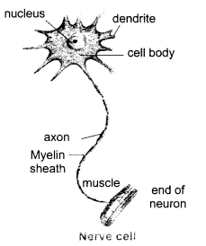
Function : The function of nerve cells is to carry information in the form of electrical signals which are called nerve impulses. Cells receive stimulus to send it to spinal cord and brain and carry the message from brain to the target organ.
Question 6
How does phototropism occur in plants ?
Answer:
The movement in any part of a plant due to light is called phototropism. The shoot of plant shows positive phototropism and roots show negative phototropism.
Phototropism in plants occurs due to the hormone auxin. When light falls on one side of a plant, the secretion of auxin hormone is more in the part away from the light. Hence, auxin causes growth in length of the cells in shady part. So, the plant appears to bend towards light.
Question 7
Which signals will get disrupted in case of a spinal cord injury ?
Answer:
(i) All the involuntary actions will get disturbed.
(ii) Reflex actions will be disturbed because reflexes are located in the spinal cord. Therefore, the quick responses required to safe guard the body will not take place.
Question 8
How does chemical coordination occur in plants ?
Answer:
Chemical coordination in plants takes place with the help of plant hormones. In most of the regions where division takes place (meristematic regions) stimuli cells secrete chemical compounds (hormone). These substances identify the information by stimulating the other nearby cells and communicating the information.
Question 9
What is the need for a system of control and coordination in an organism ?
Answer:
An organism needs control and coordination system for the following functions :
(i) To save the body of the organisms from the harmful changes in the environment.
(ii) To control the speed of voluntary and involuntary actions.
(iii) To have the capability to think and learn for responding to any stimuli.
Question 10
How are involuntary actions and reflex actions different from each other ?
Answer:
| Involuntary actions | Reflex actions |
| 1. Those actions which occur immediately without any thinking are called involuntary actions. | 1. Reflex action is an immediate response to an event which does not require any processing by brain. |
| 2. Involuntary actions are controlled by mid and hind brain. Example: Breathing, beating of heart, etc. |
2. Reflex actions are controlled by spinal cord. Example: Sneezing, coughing, etc. |
Question 11
Compare and contrast nervous and hormonal mechanisms for control and coordination in animals.
Answer:
| Nervous mechanism | Hormonal mechanism |
| It is a fast process. | It is a slow process. |
| Arteries and glands are affected. | It affects the target organ. |
| It transmits in electrochemical form. | It transmits in chemical form. |
| It does not control metabolism. | It controls metabolism. |
| Growth is not affected. | Growth is affected. |
Question 12
What is the difference between the manner in which movement takes place in a sensitive plant and the movement in our legs ?
Answer:
| Movement in a sensitive (mimosa) plant | Movement in legs of a human |
| 1. The leaves of a sensitive plant like mimosa are sensitive to touch. | 1. Leg is in control of nerve muscles. |
| 2. It is not controlled by any part of the plant. | 2. It is controlled by brain and spinal cord. |
| 3. In this, cells change their shape on changing the amount of water in them. | 3. Amount of water has no effect on the movement of muscles. |
| changing the amount of water in them. | the movement of muscles. |
| 4. The movement in a sensitive plant are nastic movement. | 4. The movement in our leg is due to voluntary nervous system. |
Control and Coordination Class 10 HOTS
Question 1.
What type of plant movement is seen in the diagram of coiling of tendril?
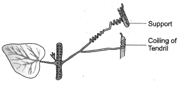
Or
How do auxins promote the growth of a tendril around a support? Describe in brief. (CCE 2012)
Answer:
Thigmotropism or curvature movement that occurs in response to contact. Less auxin is present in the region of contact. The free side having more auxin shows more growth. This causes the tendril to coil over the support.
Question 2.
Identify and label the parts shown as A and B in the accompanying figure.
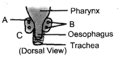
Answer:
Dorsal view of thyroid an parathyroid.
A – Thyroid,
B- Parathyroid.
Question 3.
What are the hormones involved in providing milk to the suckling infant ?
Answer:
1. Prolactin (Maternity Hormone). Production of milk.
2. Oxytocin Ejection of milk.
Question 4.
How does pancreas control glucose level of blood ?
Answer:
Pancreas produces two hormones
- Insulin from P-cells of islet of Langerhans and
- Glucagon from a- cells of islets of langerhans.
Insulin is produced when glucose level of blood rises. Insulin helps the cells to withdraw glucose from blood. It also converts glucose into glycogen in liver and muscles.
Question 5.
Glucagon is secreted when glucose level of blood falls. It mobilises reserve food like glycogen into glucose. What is pregnancy hormone ? Why is it known so ?
Answer:
Progesterone is called pregnancy hormone. It helps in maintaining pregnancy by non-formation of new ova, promoting thickening and secretory activity of uterine wall and attachment of embryo to the uterine wall.
Question 6.
What is dormin ?
Answer:
Dormin is the other name of plant hormone abscisic acid. The hormne induces dormancy in buds and seeds. So it has been called dormin.
Question 7.
(a)
- Name the parts labelled A and B in the neuron drawn above.
- Which part acquires the information in the neuron ?
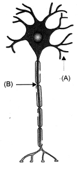 - Through which part does the information travel ?
- In what form does this information travel ?
- Where is the impulse converted into a chemical signal for onward transmission ?
(b) Name the hormone secreted by thyroid. What is the function ?
(c) Why is the use of iodised salt advisable ?
(CBSE A.I. 2008 Compt.)
Answer:
(a)
- A-Dendrite, B-Axon
- Dandrite.
- Dandrite to cell body or cyton to axon.
- Electrical impulse
- In the region of synapse.
Impulse stimulates the release of chemical neurotransmitter from the surface of presynaptic knob or bouton of axon terminal. Neurotransmitter (e.g. acetylcholine) comes in contact with chemoreceptor sites of post-synaptic membrane of the next neuron and generates a fresh impulse.
(b) Thyroxine:
Function of Thyroxine. It controls
- Basal metabolic rate
- Metabalism of carbohydrates, fats and proteins
- Consumption of energy in physical activity and body temperature
- Development and differentiation.
(c) Iodised Salt: Salt is iodised to provide iodine to thyroid for synthesis of thyroxine which is iodine containing hormone.
Question 8.
(a) What are plant hormones ? Give one example each of a plant hormone that
- promotes growth
- inhibits growth.
- promotes cell division
- promotes the growth of a tendril around a support. (CCE 2011)
(b) Name the parts labelled A, B and C in the diagram given below. Write one function of each part. (CBSE A.I. 2008 Comptt. Delhi 2008 Comptt.)
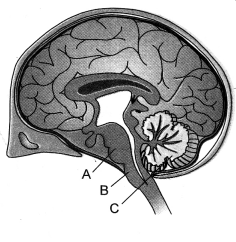
Answer:
(a) Plant Hormones:
Phytohormones are chemical substances other than nutrients produced naturally in plants which regulate growth, development, differentiation and a number of physiological processes, e.g., auxin, gibberellins, abscisic acid, cytokinins.
- Hormone That Promotes Growth. Auxin/Gibberellin.
- Hormone That Inhibits Growth. Abscisic acid or ABA
- Hormone That Promotes Cell Division. Cytokinin.
- Hormone That Promotes Growth of a Tendril Around a Support. Auxin.
(b) A-Pons Function: Relay centre, pneumotaxic area of respiratory centre.
B-Medulla Function: Reflex centre, cardiac centre, respiratory centre.
C-Cerebellum Function: Maintains equilibrium and coordinates muscular activities
Control and Coordination Class 10 Value Based Questions
Question 1.
How do tendrils reach the support when they do not have any sensory structures.
Answer:
Tendrils do not have any sensory structures but still they are able to find their support just as we grope in the dark for finding the switch-board. Tendrils perform circumnutation from their apical regions. In this the terminal parts of tendrils move in all directions. Wherever they come in contact with a support, they stop performing cicumnutation. Instead, the contacted region shows little growth while the other side grows rapidly so that the tendril coils over the support.
Question 2.
Name the nervous system which controls the functioning of internal organs. How does this system work ?
Answer:
Autonomous or visceral nervous system. The system does not consult the will of the individual. It works on its own inputs. Autonomous nervous system consists of only motor nerve fibres that innervate all organs and glands of the body. Depending upon the input, autonomous nervous system stimulates, slows down or stops the activity of an organ. For its working, autonomous or visceral nervous system has two components, sympathetic and parasympathetic. Sympathetic nervous system originates from thoracico-lumbar region, forms two ganglionic chains which send out long nerve fibres to various organs. The sympathetic nerve fibres activate the organs by release of nor-adrenaline. Parasympathetic nervous system is called cranio-sacral as it originates from some cranial and sacral nerves. It has long preganglionic fibres and ganglia attached to organs that are innervated. Its post ganglionic fibres secrete acetylcholine into organs for moderating or reducing their activity.
Question 3.
Which system is working when you start sweating during exercise ? What is its function ?
Answer:
Reflex activity of the nervous system. Actually 90% of nervous activity is performed through reflexes. It is automatic, involuntary and spontaneous response to a stimulus without consulting the will of the individual. Exercise increases body temperature. This can be harmful. Reflex action stimulates the sweat glands for releasing their secretion. Part of the sweat evaporates and cools, down the body.
Question 4.
You can become moody by simply switching on night bulb daily. How can this happen ?
Answer:
Night bulb reduces the secretion of melatonin hormone. Melatonin controls our day-night or circadian rhythm, healthy digestive and immune system, sexual cycle and moods. A reduced secretion causes insomnia and mood changes besides affecting health of our digestive and immune system.
NCERT Solutions for Class 10 Science Chapter 7 Control and Coordination
Control and co-ordination in animals and plants: Tropic movements in plants; Introduction to plant hormones; Control and co-ordination in animals, nervous system; voluntary, involuntary and reflex action; Chemical co-ordination: animal hormones.
| Board | CBSE |
| Textbook | NCERT |
| Class | Class 10 |
| Subject | Science |
| Chapter | Chapter 7 |
| Chapter Name | Control and Coordination |
| Number of Questions Solved | 26 |
| Category | NCERT Solutions |
Formulae Handbook for Class 10 Maths and Science
Question 1
What is the function of receptors in our body?
Solution:
Receptors are usually located in our sense organs, such as the inner ear, the nose, the tongue, and so on. So gustatory receptors will detect taste while olfactory receptors will detect smell.
Question 2
Draw the structure of neuron and explain its function.
Solution:
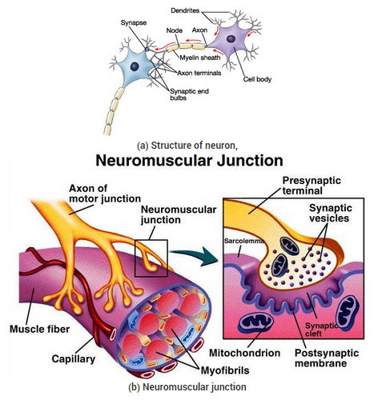
The specialised tips of some nerve cells detect all information from our environment. These receptors are usually located in our sense organs, such as the inner ear, the nose, the tongue, and so on. So gustatory receptors will detect taste while olfactory receptors will detect smell. This information, acquired at the end of the dendritic tip of a nerve cell, sets off a chemical reaction that creates an electrical impulse. This impulse travels from the dendrite to the cell body, and then along the axon to its end. At the end of the axon, the electrical impulse sets off the release of some chemicals. These chemicals cross the gap, or synapse, and start a similar electrical impulse in a dendrite of the next neuron. This is a general scheme of how nervous impulses travel in the body. A similar synapse finally allows delivery of such impulses from neurons to other cells, such as muscles cells or gland. It is thus no surprise that nervous tissue is made up of an organized network of nerve cells or neurons, and is specialised for conducting information via electrical impulses from one part of the body to another.
Question 3
How does phototropism occur in plants?
Solution:
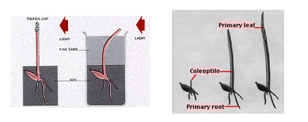
Phototropism is a growth movement induced by a light stimulus. Growth towards a source of light is called positive phototropism, that away from the source is termed negative phototropism. The tips of shoots are usually positively, that of roots negatively phototropic.
Charles Darwin and his son Francis discovered (in 1880) that the phototropic stimulus is detected at the tip of the plant.
The Darwins used grass seedlings for some of their experiments. When grass seeds germinate, the primary leaf pierces the seed coverings and the soil while protected by the coleoptile, a hollow, cylindrical sheath that surrounds it. Once the seedling has grown above the surface, the coleoptile stops growing and the primary leaf pierces it.
The Darwins found that the tip of the coleoptile was necessary for phototropism but that the bending takes place in the region below the tip.
If they placed an opaque cover over the tip, phototropism failed to occur even though the rest of the coleoptile was illuminated from one side.
However, when they buried the plant in fine black sand so that only its tip was exposed, there was no interference with the tropism – the buried coleoptile bent in the direction of the light.
From these experiments, it seemed clear that
- The stimulus (light) was detected at one location (the tip)
- The response (bending) was carried out at another (the region of elongation).
- This implied that the tip was, in some way, communicating with the cells of the region of elongation.
Question 4
How does chemical coordination occur in plants?
Solution:
It has been found that the growth of plants is regulated by certain chemical substances which are synthesized by the plants in very small amounts. These are known as plant hormones or phytohormones.
They are the organic substances which either promote or inhibit growth. A phytohormones can be defined as a chemical substances which are produced naturally in plants and are capable of translocation and regulating one or more physiological processes when present in low concentration. Main categories of plant hormones are:
- Auxins
- Gibberellins
- Cytokinins
- Ethylene
- Abscisic acid
Auxins and Gibberellins stimulate cell elongations, cytokinins stimulate cell division ethylene promotes transverse or isodiametric growth and abscisic acid is a growth inhibitor.
Question 5
What is the need for a system of control and coordination in an organism?
Solution:
Co-ordination in this sense refers to the regulation or control of body activity.
Plants need very little in the way of a control system. Since growth and reproduction are about the only things that are regulated, a rapid control system is not required and hormonal control is all they possess.
Animals are continually moving through new environments that may pose all types of changes and threatening situations to the organism. This requires the rapid and precise control of a nervous system. Hormones regulate slower activities, such as growth, development and reproduction.
Question 6
How are involuntary actions and reflex actions different from each other?
Solution:
All reflex actions are involuntary in nature but all involutary actions are not reflexes as the beating of heart is an involuntary action but is not reflex action.
Reflex actions are very quick but all involutary actions may not be very fast as in heart beating.
A reflex action may involve any muscle or a gland as we withdraw our hand on touching a hot object but all involuntary actions involve only smooth i.e., involuntary or cardiac muscles.
Reflex actions are at the level of spinal cord whereas the involuntary actions generally involve brain too.
Nerves and autonomious nervous system can increase or decrease the rate of involuntary actions but reflex actions can be controlled by great will only and are not usually controllable.
Reflex actions are done to meet emergencies where as an inv.action may or may not be for just meeting an emergency but may be a critical lie process as circulation of blood, swallowing of food, movement of food in food pipe, etc.
Multiple Choice Questions (MCQs) [1 Mark each]
Question 1.
What is the correct direction of flow of electrical impulses ? [NCERT Exemplar]
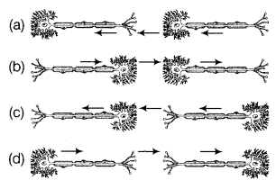
Answer:
(c) Direction of flow of electrical impulse.
Impulse → Dendrite → Cell body → Axon → Release of chemicals that cross synapse → Dendrite of next neuron.
Question 2.
Three directions in which nerve impulses can travel in the nervous system are listed below:
(i) Away from the central nervous system
(ii) Towards the central nervous system
(iii) Within the central nervous system
In which direction do impulses in sensory and relay (intermediate) neurons travel?
| Sensory Neuron |
Relay |
|
| (a) | (i) | (ii) |
| (b) | (i) | (iii) |
| (c) | (ii) | (i) |
| (d) | (ii) | (iii) |
Answer:
(d) Sensory neuron transmits impulses towards CNS, (i.e. brain and spinal cord) while, the relay neurons occur within the CNS and serve as links between other neurons.
Question 3.
In a nerve pathway, the following events take place in a coordinated order.
(i) Activation of muscle
(ii) Activation of receptor
(iii) Passage of impulses along a motor neuron
(iv) Passage of impulses along a sensory neuron
Read the events given and identify the correct order of these events from the table given below:
| First | → | Last | ||
| (a) | (ii) | (iii) | (iv) | (i) |
| (b) | (ii) | (iv) | (iii) | (i) |
| (c) | (iv) | (i) | (iii) | (ii) |
| (d) | (iv) | (ii) | (i) | (iii) |
Answer:
(b) The sequence of events in a typical nerve pathway is receptor → passage of impulse along sensory neuron → passage of impulse along motor neuron → activation of muscle (effector). Thus, the correct sequence is (ii), (iv), (iii) and (i).
Question 4.
The diagram shows a section of the brain and different parts labelled as W,X, Y and Z.
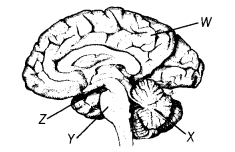
Study the figure and correlate the regions which control balance, heart rate and temperature in human body?
| Balance | Heart Rate | Temperature | |
| (a) | W | Z | X |
| (b) | X | Y | Z |
| (c) | Y | X | W |
| (d) | Z | W | Y |
Answer:
(b) Out of the options given, the region X, (i.e. cerebellum) controls balance, region Y (i.e. medulla oblongata) controls heartbeat and region Z, (i.e. hypothalamus) controls temperature in human body.
Question 5.
Which of the following endocrine glands is unpaired? [NCERT Exemplar]
(a) Adrenal
(b) Testes
(b) Pituitary
(d) Ovary
Answer:
(c) There are two adrenal glands, one on top of each kidney that make adrenaline hormone. Testes are paired glands present in males and secrete male sex hormone. Pituitary gland is present just below the brain and is unpaired. It is also called master gland as it secretes a number of hormones. Ovaries are paired glands present in females and secrete female sex hormones.
Question 6.
Dramatic changes of body features associated with puberty are mainly because of secretion of [NCERT Exemplar]
(a) oestrogen from testes and testosterone from ovary
(b) oestrogen from adrenal gland and testosterone from pituitary gland
(c) testosterone from testes and oestrogen from ovary
(d) testosterone from thyroid gland and oestrogen from pituitary gland
Answer:
(c)
| Gland | Hormone | Function | |
| Testes (only in males) |
Testosterone | To control the development of male sex organs and male features such as deep voice, etc., i.e. changes associated with puberty. |
|
| Ovaries (only in females) |
Oestrogen | To control the development of female sex organs and female features such as soft skin, etc. |
|
| Progesterone | To control uterus changes during menstrual cycle and helps in maintenance of pregnancy. | ||
Class 10 Science Control and Coordination Mind Map
Coordination is the process through which two or more organs interact and complement the functions of one another. The neural system & endocrine system jointly coordinate & regulate the physiological functions in the body. The neural system provides an organised network of point-to-point connections for a quick coordination. The endocrine system provides chemical integration through hormones.
Animal Nervous System
The neural system of all animals is composed of highly specialized cells called neurons which can detect, receive & transmit different kinds of stimuli. They are specialized for conducting information via electrical impulses from one part of the body to another.
Structure and Function of Neuron
- It is a structural & functional unit of neural system and is composed of three major parts:
- Ceil body contains cytoplasm with typical cell organelles like nucleus etc.
- Dendrites: Short fibres which branch repeatedly & project out of the cell body. These fibres transmit impulses towards the cell body.
- Axon is a long fibre, the distal end of which is branched and forms nerve ending. Nerve endings possess synaptic vesicles containing chemicals called neurotransmitters.
Transmission of impulses:
- Stimulus or information from the environment is detected by specialized tips of some nerve cells called as receptors.
- Dendritic tip acquire all these information and sets off a chemical reaction.
- This chemical reaction then creates an electric impulse that travels from the dendrite to the cell body, and then along the axon to its end.
- At the end of the axon, the electrical impulse sets off the release of some chemicals (neurotransmitters). These chemicals cross the gap, or synapse, and start a similar electrical impulse in a dendrite of the next neuron.
- A similar synapse finally allows delivery of such impulses from neurons to other cells, such as muscles cells or gland.
The human neural system is divided into two parts:
- Central neural system (CNS) includes the brain & spinal cord and is the site of information processing & control.
- Peripheral neural system (PNS) comprises of all nerves of body associated with CNS (brain and spinal cord). The nerve fibres of PNS are of two types: cranial nerves (arising from the brain) and spinal nerves (arising from the spinal cord).
Brain
- It is the main coordinating centre of the body. The bra in and spinal cord constitute the CNS. They receive information from al 1 parts of the body and integrate it.
- The brain is located in bony box called as cranium or skull which protects the brain. Spinal cord is protected with the help of vertebral column. In addition, cerebrospinal fluid also covers the brain and the spinal cord which provide the function of shock absorption.
- The brain has three such major parts or regions, namely the fore-brain, mid-brain and hind-brain.
- Fore-brain: It is the main thinking part of the brain. It consists of cerebrum, hypothalamus etc.
- Function: interpret information received from sensory receptors.
- Control the movement of voluntary muscles.
- It also contains centre associated with hunger which gives us the sensation of feeling full.
- Midbrain: It serves important function in few involuntary movements, movements of the eye, auditory and visual processing.
- Hindbrain: It consists of pons, medulla, and cerebellum.
- Function: Medulla controls involuntary actions such as blood pressure, salivation and vomiting.
- Cerebellum is responsible for precision of voluntary actions and maintaining the posture and balance of the body.
Reflex Action
- The entire process of response to a peripheral nervous stimulation that occurs involuntarily (without conscious effort or thought) and requires the involvement of a part of central nervous system is called a reflex action.
- Reflex action decreases the duration of action by bypassing the thinking and processing step.
- It does so by linking the nerves carrying the signal (say the sensation of heat) directly to the nerves that move the muscle. These types of linkage or connection between input and output nerves are formed in the spinal cord.
- These connections are called as reflex arc (sensory/input nerve-* Spinal cord -> motor/ output nerve)
Coordination In Plants
Plants have neither nervous system nor muscles. Their movements or responses are either growth dependent or growth independent.
Immediate Response To Stimulus Or Growth Independent
The plants also use electrical-chemical means to convey information from cell to cell, but unlike in animals, there is no specialised tissue in plants for the conduction of information.
Secondly, plant cells change shape by changing the amount of water in them, resulting in swelling or shrinking. In contrast, animal muscle cells have special proteins that change both their shape and their arrangement in the cell in response to nervous electrical impulses.
Example: folding up and drooping of leaves of chhui-mui (the ‘sensitive’ or ‘touch-me-not’ plant of the Mimosa family) in response to touch.
Movement Due To Growth
The movement of a plant in response to the stimulus is called as tropism. The movement in the direction of the response is called as positive tropism and movement away from the stimulus is termed as negative tropism.
Types:
- Phototropism: Bending of plant in response to the light e.g. movement of sunflowers in response to day or night.
- Geotropism: Movement of plant in response to gravity. Shoots show negative geotropism and roots show positive geotropism.
- Chemotropism: Movement of plant in response to chemical as observed in case of growth of pollen tube.
- Hydrotropism: e.g. roots beneath the Earth’s surface bend in the direction of underground w^ater.
Other example may include the climbing of tendrils in response to touch. When they come in contact with any support, the part of the tendril in contact with the object does not grow as rapidly as the part of the tendril away from the object. This causes the tendril to circle around the object and thus cling to it.
Plant Hormones
There are five main types of plant hormones or growth regulators:
- Auxins: Helps in cell elongation and thus phototropism, geotropism, and other plant responses.
- Gibberellins: Stimulate growth of the stem and flowering.
- Cytokinins: They cause cell division, enlargement, and organ formation. They are present in greater concentration in areas of rapid cell division, such as in fruits and seeds.
- Ethylene: Promotes ripening of fruits.
- Abscisic acid: Inhibits growth and causes wilting of leaves and fruits.
Hormones In Animals
Hormones are non-nutrient chemicals which act as intercellular messengers & are produced in trace amounts. The timing and amount of hormone released are regulated by feedback mechanisms Examples:
- Adrenaline: Secreted from adrenal gland which prepare the body for fight or flight situation.
- Thyroxin: Secreted from thyroid gland and regulates carbohydrate, protein and fat metabolism so as to provide the best balance for growth.
Deficiency of iodine in diet may cause hypo-secretion of thyroxin which results in goiter. - Growth hormones which regulate growth and. development of the body are secreted from
pituitary gland.
Hyper-secretion may cause gigantism and hypo-secretion may cause dwarfism. - Testosterone in males and oestrogen in females lead to changes take place during puberty’.
- Insulin produced by pancreas regulates the blood sugar level in the body.
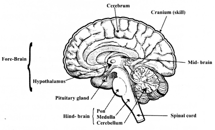
NCERT Solutions for Class 10 Science Chapter 7 Control and Coordination (Hindi Medium)
उत्तर प्रदेश, मध्य प्रदेश, and गुजरात में भी NCERT की किताबें लगने के बाद हम लोग UP बोर्ड, MP बोर्ड, Gujrat Board के लिए भी अध्धयन सामग्री बना रहे हैं। अगर UP Board NCERT Solutions प्राप्त करने में विद्यार्थियों को किसी प्रकार की परेशानी हो रही है तो हमें Contact करें UP Board Secondary Education (High School) के लिए अध्ययन सामग्री, Sample Papers, Notes तथा पश्नों के हल यहाँ से प्राप्त करें।
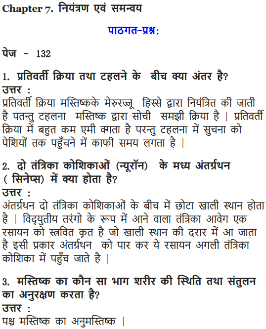
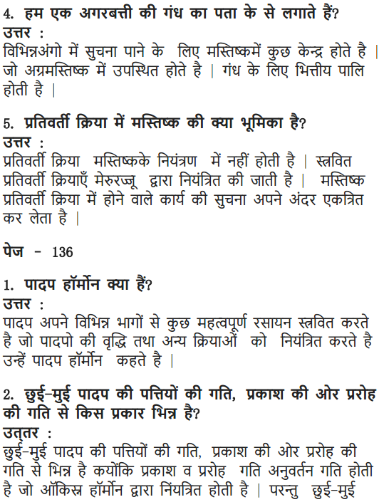
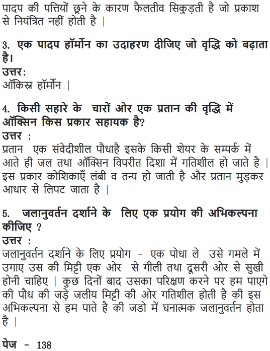
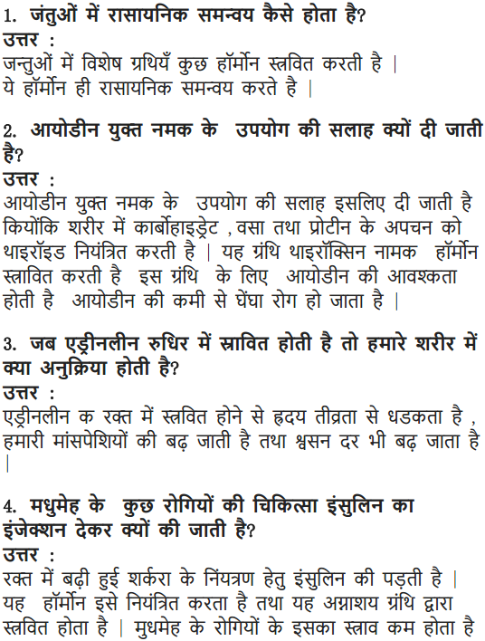
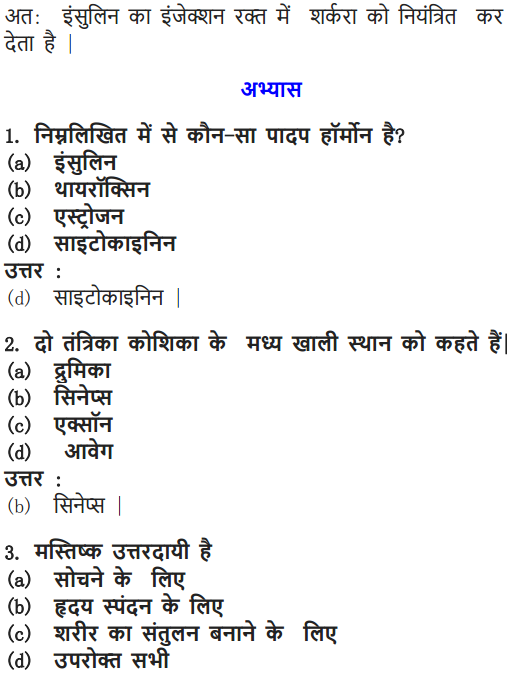
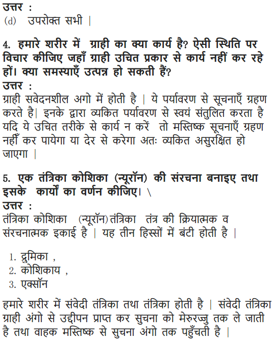
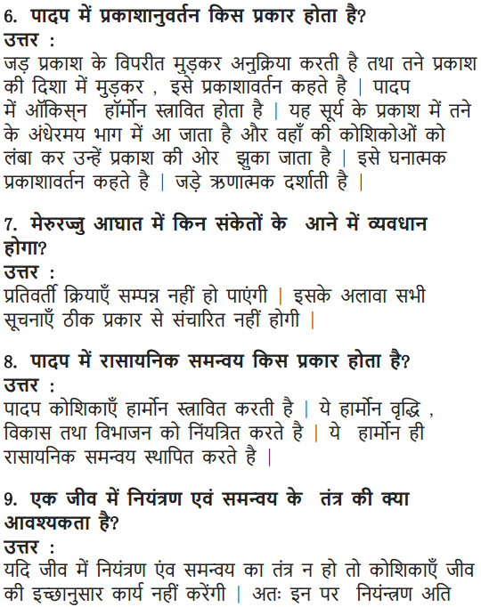
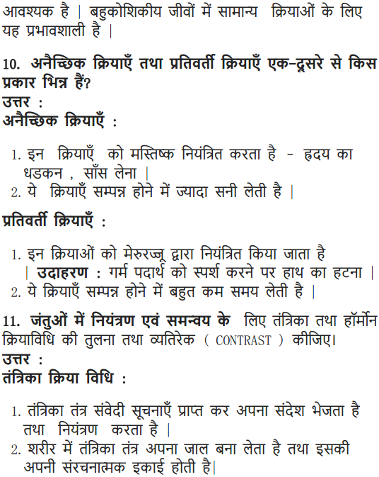

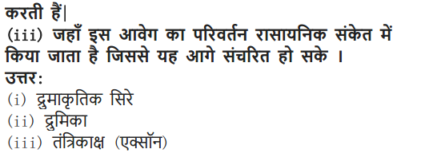
Now you are provided all the necessary information regarding control and coordination class 10 NCERT questions and we hope this detailed article on NCERT Solutions For Class 10 Science Chapter 7 Control And Coordination is helpful. If you have any question or doubt related to this article, drop your comments in the comment box below and we will get back to you as soon as possible.
NCERT Solutions for Class 10 Science All Chapters
- Chapter 1 Chemical Reactions and Equations
- Chapter 2 Acids, Bases and Salts
- Chapter 3 Metals and Non-metals
- Chapter 4 Carbon and Its Compounds
- Chapter 5 Periodic Classification of Elements
- Chapter 6 Life Processes
- Chapter 7 Control and Coordination
- Chapter 8 How do Organisms Reproduce?
- Chapter 9 Heredity and Evolution
- Chapter 10 Light Reflection and Refraction
- Chapter 11 Human Eye and Colourful World
- Chapter 12 Electricity
- Chapter 13 Magnetic Effects of Electric Current
- Chapter 14 Sources of Energy
- Chapter 15 Our Environment
- Chapter 16 Management of Natural Resources